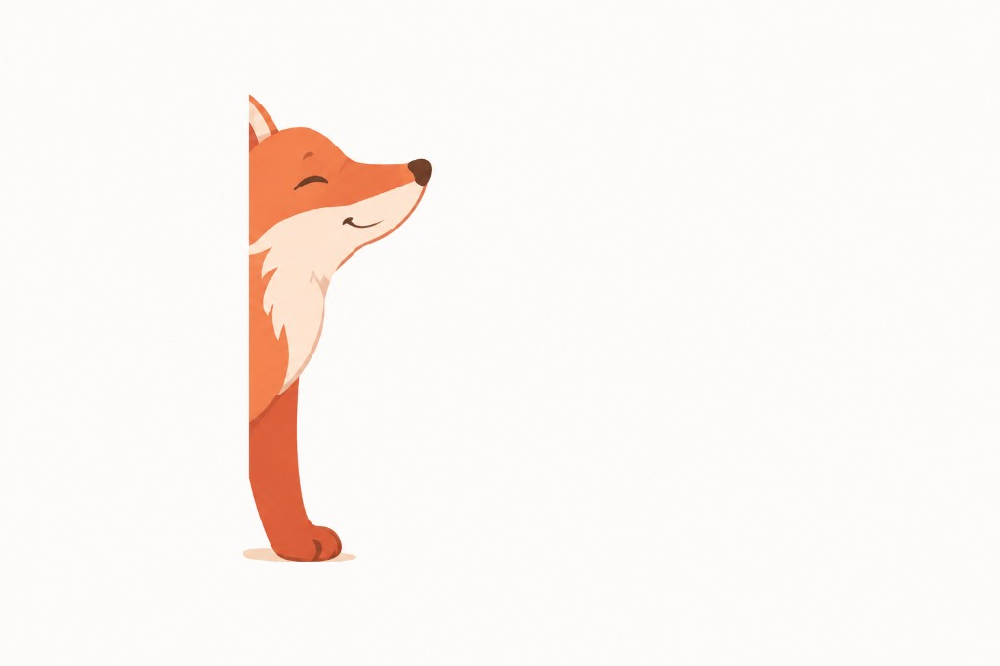

Город после дождя. Знакомое лицо на перекрёстке. Каждый выбор ведёт к другой правде — и к одной из трёх концовок.
Драма и мистика. Пишет ветвящиеся новеллы о памяти и выборе.
Дождь стих. Слева кафе, справа парк.
Город после дождя. Знакомое лицо на перекрёстке. Каждый выбор ведёт к другой правде.
Кафе или парк — всё равно возвращаюсь к прологу.

Третья концовка стоит того, чтобы пройти заново.
Ориджинал · Гет · 16+
Кафе или парк — всё равно возвращаюсь к прологу.

Третья концовка стоит того, чтобы пройти заново.